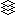
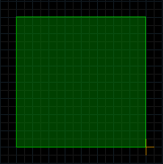
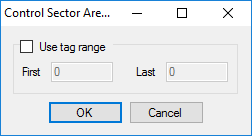
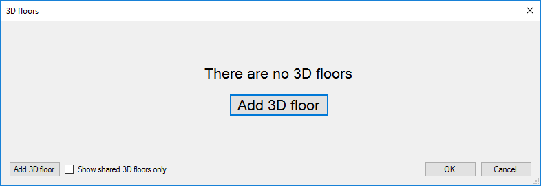
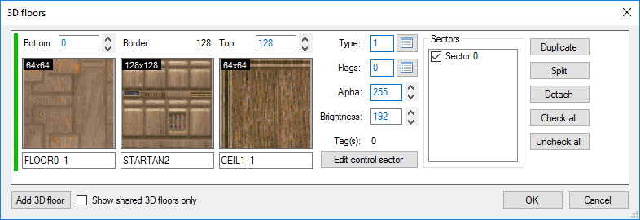
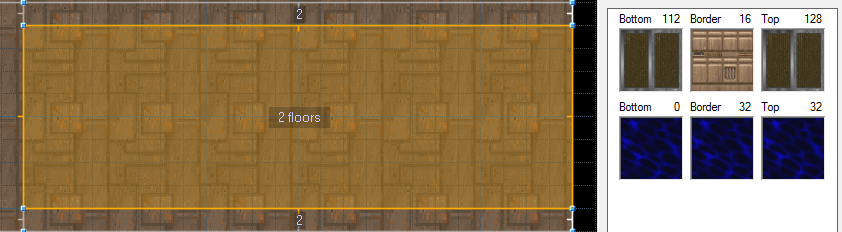
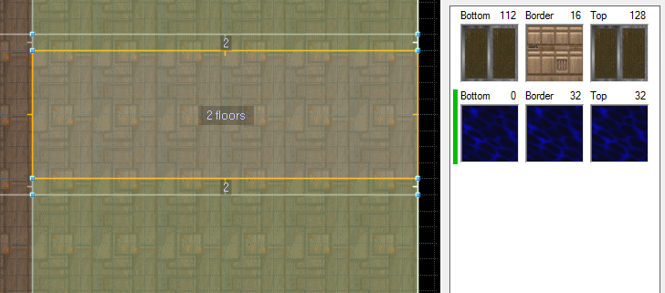

此模式让你管理 3D 地板。在 Hexen 格式和 UDMF 中可用
菜单路径：模式 -> 3D 地板模式
动作类别：3D 地板插件。
默认按键：无。
| 动作 | 默认按键 | 界面按钮 | 说明 |
|---|---|---|---|
| 3D 地板编辑模式 | 无 |  |
进入 3D 地板编辑模式 |
| 向下循环高亮的 3D 地板 | Shift+ScrollDown | 无 | 在高亮扇区中存在的 3D 地板之间向下循环 |
| 向上循环高亮的 3D 地板 | Shift+ScrollUp | 无 | 在高亮扇区中存在的 3D 地板之间向上循环 |
| 选择 3D 地板控制扇区 | Shift+S | 无 | 选择高亮 3D 地板的控制扇区 |
| 重新定位 3D 地板控制扇区 | 无 | 文字按钮 | 将 3D 地板控制扇区重新定位到控制扇区区域的当前位置 |
| 无 |
控制扇区区域
进入 3D 地板模式后，你会看到一个绿色方块：
这就是控制扇区区域（Control Sector Area，CSA）。所有 3D 地板控制扇区都会创建在此区域中。如果 CSA 中没有足够的空间，你将无法创建更多 3D 地板。
修改控制扇区区域
你可以调整 CSA 的大小并移动它。调整大小的方法是按住鼠标右键拖动边缘或角。移动的方法是先将光标指向 CSA 内部，然后按住鼠标右键拖动它。标签范围
你可以定义一组应用于 3D 地板控制扇区的标签范围。方法是将光标指向 CSA 内部，然后按下鼠标右键。这将打开以下对话框：
要设置要使用的标签范围，请先勾选 Use tag range（使用标签范围）复选框，然后设置所需的首个和最后一个标签。注意：如果标签用完，你将无法创建更多 3D 地板。
管理 3D 地板
3D 地板模式的用法与扇区模式类似。你可以选择或取消选择扇区，但当你编辑它们时（默认：鼠标右键），会弹出 3D 地板编辑对话框：
要添加新的 3D 地板，请按下任意一个 *Add 3D floor* 按钮。执行此操作后，窗口中会显示一个控件，让你设置该 3D 地板的属性。左侧的绿色条表示该 3D 地板是新添加的。
注意：你可以在同一批扇区中拥有许多 3D 地板。只需反复按下 Add 3D floor（添加 3D 地板）按钮。

在左侧，你可以设置 3D 地板的底部（控制扇区地板）高度和贴图、边缘贴图以及顶部（控制扇区天花板）高度和贴图。边缘高度（即厚度）会自动计算。
中间部分让你设置常用属性，例如 3D 地板的类型和标志，以及它的 alpha 值和 3D 地板下方的亮度。它还会显示控制扇区的标签，以及一个用于编辑控制扇区所有属性的按钮。
右侧会显示一个扇区列表。此列表指示该 3D 地板应用到了哪些扇区。当前选中的扇区显示在顶部，当前未选中的扇区灰显在底部。你可以勾选或取消勾选选中的扇区，以向该扇区应用 3D 地板或从中移除 3D 地板。
最右侧有几个按钮，用于加速常见的工作流程：
| 按钮 | 动作 |
|---|---|
| Duplicate（复制） | 创建该 3D 地板的精确副本，并将其添加到所有已勾选的扇区 |
| Split（拆分） | 为每个已勾选的扇区创建一个新的 3D 地板，使每个扇区都拥有各自独立的 3D 地板 |
| Detach（分离） | 创建该 3D 地板的副本，将已勾选的扇区从源 3D 地板中移除，并添加到新创建的 3D 地板中 |
| Check all（全部勾选） | 勾选所有扇区，将 3D 地板应用到它们 |
| Uncheck all（全部取消勾选） | 取消勾选所有扇区，从它们中移除 3D 地板 |
使用停靠面板
该插件附带一个用于 3D 地板编辑模式的停靠面板。如有必要，请按下停靠面板顶部的 图标，确保停靠面板始终处于展开状态。进入 3D 地板编辑模式时，默认会选中该停靠面板。高亮一个扇区时，停靠面板会显示该扇区中 3D 地板的基本信息：

你可以使用 向上循环高亮的 3D 地板（默认：Shift+ScrollUp）和 向下循环高亮的 3D 地板（默认：Shift+ScrollDown）动作，在停靠面板中的 3D 地板之间循环。左侧的绿色条会指示当前高亮的是哪个 3D 地板。高亮 3D 地板应用到的所有扇区都会以绿色调显示。

你可以使用 选择 3D 地板控制扇区动作（默认：Shift+S）来选择高亮 3D 地板的控制扇区。如果你想为这个 3D 地板应用斜面，这会很有用。